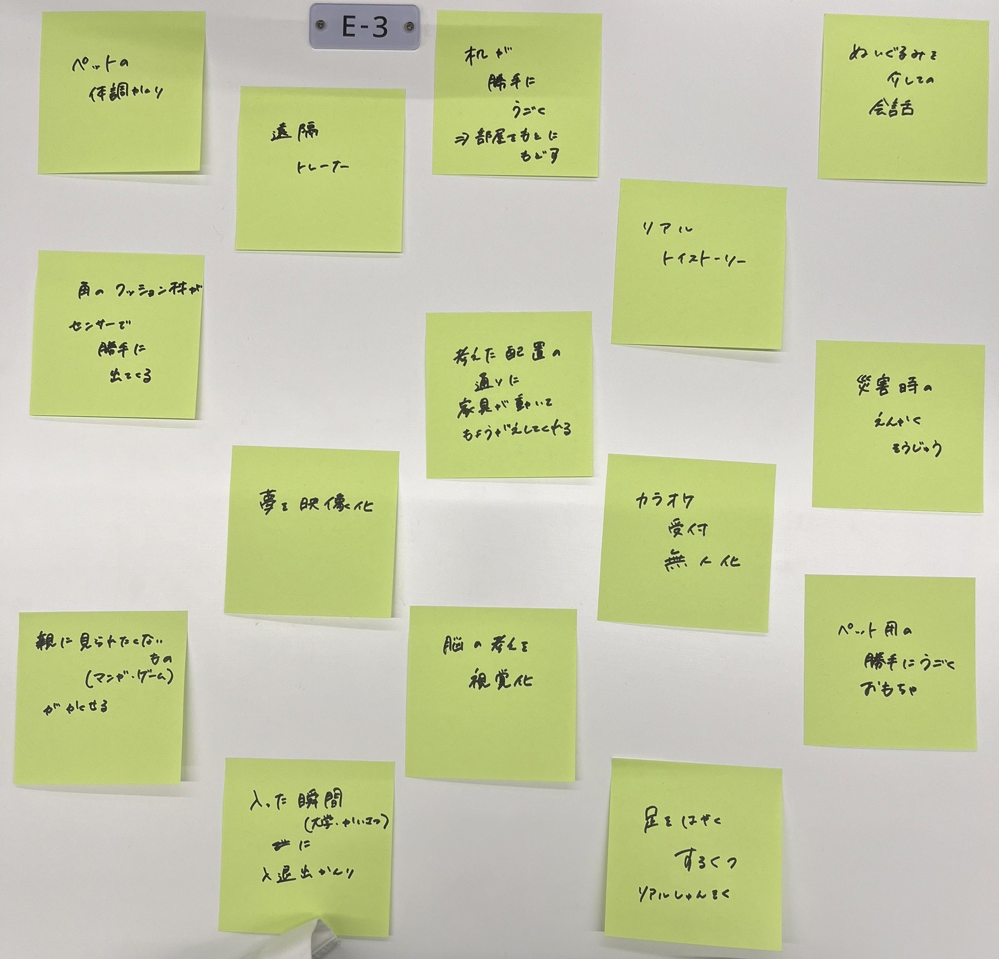
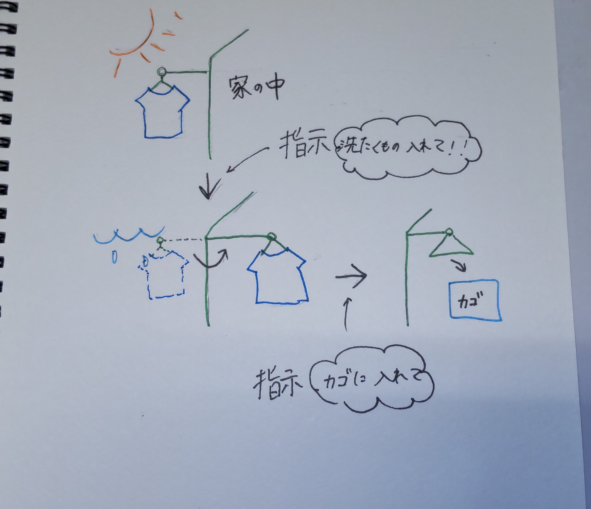

IoTとは
IoTとは「internet of things」の略称。 様々なものをインターネットとつないで便利にすること。
☆身近な例
・外にいながら家のカギをかける
・スマートスピーカ（googlehome,Alexaなど）に指示してテレビをつける
・アプリを用いて自転車をレンタルする。 などなど・・・
グループワークポストイット画像

iotでできそうなこと
干してる洗濯物を遠隔で入れといてくれるシステム

外出中に雨がふりはじめた。洗濯物入れたいけど今時間がない、、、などの時に
勝手に洗濯物を中に入れておけたらとても便利なのでは。。。？！
課題動画made by HANA